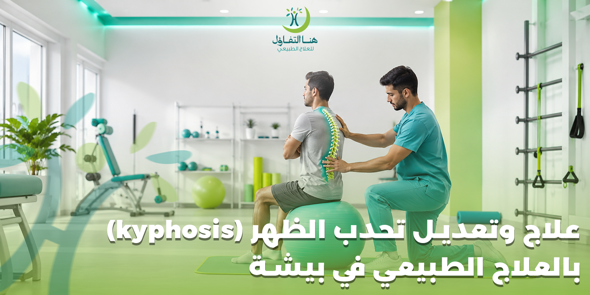

يُعد تحدب الظهر (Kyphosis) من المشكلات التي تؤثر على استقامة العمود الفقري ووضعية الجسم، وقد يؤدي في بعض الحالات إلى الشعور بالألم، وصعوبة الحركة، والإجهاد المستمر، بالإضافة إلى تأثيره على المظهر العام والثقة بالنفس. ومع تطور أساليب العلاج الطبيعي أصبح من الممكن تحسين العديد من حالات تحدب الظهر وتقوية العضلات الداعمة للعمود الفقري من خلال برامج علاجية مصممة وفق تقييم كل حالة.
في مركز هنا التفاؤل للعلاج الطبيعي في بيشة نقدم برامج علاجية متخصصة تهدف إلى تحسين القوام، وتقليل الألم، واستعادة الحركة الطبيعية، من خلال جلسات علاج طبيعي تعتمد على أحدث الأساليب العلاجية والأجهزة الحديثة، مع متابعة مستمرة لضمان تحقيق أفضل النتائج الممكنة وفق حالة كل مريض.
إذا كنت تبحث عن علاج تحدب الظهر في بيشة أو ترغب في استشارة مختص حول أفضل خطة علاجية، فإن فريقنا يعمل على تقييم الحالة بدقة ووضع برنامج علاجي يناسب العمر، ودرجة التحدب، والحالة الصحية العامة.
ما هو تحدب الظهر (Kyphosis)؟
تحدب الظهر هو زيادة غير طبيعية في الانحناء الطبيعي للجزء الصدري من العمود الفقري، مما يجعل الجزء العلوي من الظهر يبدو أكثر استدارة من المعتاد. وتختلف شدة التحدب من شخص لآخر، فقد يكون بسيطًا ولا يسبب أعراضًا واضحة، وقد يكون شديدًا ويؤثر في الحركة والتنفس وجودة الحياة.
ولا تعني جميع حالات انحناء الظهر وجود مرض خطير، فبعض الحالات تنتج عن وضعيات جلوس خاطئة أو ضعف العضلات، بينما ترتبط حالات أخرى بتغيرات في الفقرات أو أمراض معينة، لذلك يعتمد العلاج على التشخيص الدقيق وليس على المظهر الخارجي فقط.
الفرق بين تحدب الظهر الطبيعي والمرضي
يمتلك كل إنسان انحناءً طبيعيًا في العمود الفقري يساعد على توزيع الوزن والحفاظ على التوازن أثناء الحركة. لكن عندما تزيد درجة هذا الانحناء عن المعدل الطبيعي ويبدأ في التأثير على شكل الجسم أو وظائفه، يصبح الأمر بحاجة إلى تقييم طبي.
ويتميز التحدب المرضي بعدة علامات، منها:
- بروز واضح في أعلى الظهر.
- انحناء الكتفين إلى الأمام.
- صعوبة الوقوف باستقامة.
- آلام متكررة في الظهر.
- إجهاد سريع أثناء الوقوف أو المشي.
- ضعف في مرونة العمود الفقري.
ما أسباب تحدب الظهر؟
توجد أسباب متعددة قد تؤدي إلى الإصابة بتحدب الظهر، ويحدد أخصائي العلاج الطبيعي والطبيب المختص السبب بعد الفحص السريري والتقييم.
1. سوء القوام
يعد الجلوس لفترات طويلة بطريقة غير صحيحة أو استخدام الهاتف والكمبيوتر لساعات متواصلة من أكثر الأسباب شيوعًا، خاصة لدى الطلاب وموظفي المكاتب.
2. ضعف عضلات الظهر
عندما تضعف العضلات المسؤولة عن تثبيت العمود الفقري يصبح الحفاظ على القوام السليم أكثر صعوبة.
3. مرض شويرمان (Scheuermann's Disease)
يظهر غالبًا خلال مرحلة المراهقة نتيجة تغيرات في نمو الفقرات، وقد يؤدي إلى تحدب أكثر وضوحًا إذا لم يتم التعامل معه مبكرًا.
4. هشاشة العظام
قد تؤدي هشاشة العظام إلى حدوث كسور انضغاطية في الفقرات، وهو ما يزيد من انحناء الظهر خاصة لدى كبار السن.
5. التشوهات الخلقية
قد يولد بعض الأطفال بعيوب في تكوين الفقرات تؤدي إلى ظهور التحدب منذ الصغر.
6. الإصابات والكسور
قد تسبب إصابات العمود الفقري أو الحوادث تغيرًا في استقامة الفقرات إذا لم تُعالج بالشكل المناسب.
عوامل تزيد من احتمالية الإصابة
هناك عوامل قد تزيد من فرص الإصابة أو تؤدي إلى تفاقم المشكلة، ومنها:
- الجلوس لفترات طويلة.
- قلة النشاط البدني.
- ضعف اللياقة البدنية.
- حمل الأوزان بطريقة خاطئة.
- السمنة.
- التقدم في العمر.
- الإصابة بهشاشة العظام.
- بعض الأمراض العصبية والعضلية.
- ضعف عضلات البطن والظهر.
أعراض تحدب الظهر
قد تختلف الأعراض من شخص لآخر حسب درجة التحدب وسببه، وتشمل:
- استدارة واضحة في أعلى الظهر.
- ميل الرأس للأمام.
- انحناء الكتفين.
- ألم في منتصف أو أعلى الظهر.
- تيبس في العمود الفقري.
- صعوبة الوقوف باستقامة.
- الشعور بالإرهاق بعد الوقوف لفترات طويلة.
- انخفاض مرونة الظهر.
- في الحالات المتقدمة قد تظهر صعوبة في التنفس نتيجة تأثير الانحناء على القفص الصدري.
متى يجب مراجعة مركز العلاج الطبيعي؟
ينصح بعدم تجاهل المشكلة إذا لاحظت:
علامات تتطلب تقييماً متخصصاً:
- زيادة واضحة في انحناء الظهر.
- استمرار الألم لعدة أسابيع.
- صعوبة أداء الأنشطة اليومية.
- ضعف في الحركة.
- تغيرًا ملحوظًا في القوام.
- ظهور التحدب لدى الأطفال أو المراهقين.
ويساعد التدخل المبكر في تحسين النتائج وتقليل احتمالية تطور الحالة.
لماذا يعد التشخيص المبكر مهمًا؟
كلما بدأ العلاج في مرحلة مبكرة، زادت فرص تحسين القوام وتقوية العضلات واستعادة الحركة الطبيعية، خاصة في الحالات الناتجة عن ضعف العضلات أو العادات اليومية الخاطئة. كما يتيح التشخيص المبكر وضع خطة علاجية تناسب احتياجات كل مريض وتساعد على الحد من تطور الانحناء.
هل يمكن علاج تحدب الظهر بدون جراحة؟
يُعد هذا السؤال من أكثر الأسئلة التي يطرحها المرضى عند تشخيصهم بتحدب الظهر. والإجابة تعتمد على عدة عوامل، أهمها سبب التحدب، ودرجته، وعمر المريض، والحالة الصحية العامة. ففي كثير من الحالات، خاصةً إذا كان التحدب ناتجًا عن ضعف العضلات أو سوء القوام، يمكن للعلاج الطبيعي أن يساهم بشكل كبير في تحسين استقامة الظهر، وتقليل الألم، وزيادة مرونة العمود الفقري، دون الحاجة إلى التدخل الجراحي.
أما الحالات الشديدة أو الناتجة عن تشوهات هيكلية كبيرة فقد تحتاج إلى تقييم طبي شامل لتحديد أفضل الخيارات العلاجية، وقد يكون العلاج الطبيعي جزءًا مهمًا من الخطة العلاجية قبل الجراحة أو بعدها.
في مركز هنا التفاؤل للعلاج الطبيعي في بيشة يتم تقييم كل حالة على حدة لوضع برنامج علاجي يناسب احتياجاتها وأهدافها.
كيف يساعد العلاج الطبيعي في علاج تحدب الظهر؟
يعتبر العلاج الطبيعي من أهم الوسائل المستخدمة لتحسين حالات تحدب الظهر، حيث لا يقتصر دوره على تخفيف الألم فقط، بل يهدف إلى تحسين القوام، وزيادة مرونة العمود الفقري، وتقوية العضلات التي تدعم الظهر، مما يساعد على تحسين الأداء الحركي وتقليل تأثير المشكلة على الحياة اليومية.
ويركز البرنامج العلاجي على عدة محاور، منها:
- تحسين استقامة الجسم.
- تقوية عضلات الظهر.
- تقوية عضلات البطن.
- تحسين مرونة العمود الفقري.
- زيادة نطاق الحركة.
- تحسين التوازن.
- تصحيح العادات اليومية الخاطئة.
- تقليل الضغط على الفقرات.
- تحسين القدرة على ممارسة الأنشطة.
خطة العلاج في مركز هنا التفاؤل ببيشة
في هنا التفاؤل لا يتم الاعتماد على برنامج علاجي موحد لجميع المرضى، بل تبدأ رحلة العلاج بتقييم شامل للحالة لتحديد درجة التحدب والأعراض المصاحبة، ثم يتم إعداد خطة علاجية تناسب كل مريض.
التقييم الأولي
يقوم أخصائي العلاج الطبيعي بإجراء تقييم للحالة يشمل:
- • مراجعة التاريخ المرضي.
- • تقييم القوام السريري.
- • قياس مدى الحركة.
- • تقييم قوة العضلات.
- • تحديد مناطق الألم بدقة.
- • تحليل طريقة المشي والوقوف.
تصميم البرنامج العلاجي
بعد انتهاء التقييم يتم تصميم برنامج يناسب الحالة، مع مراعاة:
- • عمر المريض.
- • درجة التحدب بالظهر.
- • مستوى النشاط البدني.
- • وجود أمراض مصاحبة.
- • أهداف العلاج المرجوة.
المتابعة الدورية
يتم متابعة تطور الحالة بشكل منتظم، وإجراء التعديلات اللازمة على البرنامج العلاجي وفقًا لاستجابة المريض وتطوره الحركي.
التقنيات المستخدمة في علاج تحدب الظهر
يعتمد العلاج على مجموعة من الوسائل التي يحددها الأخصائي وفق تقييم الحالة، ومنها:
التمارين العلاجية
تساعد على تقوية عضلات الظهر، تحسين مرونة العمود الفقري، تصحيح القوام، زيادة التوازن وتحسين الحركة.
العلاج اليدوي
قد يستخدم أخصائي العلاج الطبيعي تقنيات العلاج اليدوي والمساج العلاجي الموجه لتحسين حركة المفاصل والأنسجة وتقليل الألم.
العلاج بالأجهزة
قد يتم استخدام بعض الأجهزة العلاجية للمساعدة في تخفيف الألم والالتهاب وتحسين كفاءة البرنامج العلاجي وفق تقييم الأخصائي.
التدريب على الوضعيات
يتعلم المريض الطريقة الصحيحة للجلوس، الوقوف، المشي، حمل الأشياء، استخدام الهاتف، والنوم بطريقة تقلل الضغط على العمود الفقري.
تمارين علاج تحدب الظهر
تعد التمارين العلاجية من أهم عناصر العلاج الطبيعي، لأنها تساعد على تحسين قوة العضلات وزيادة المرونة وتحسين القوام.
وقد يشمل البرنامج تمارين تستهدف وتقوي:
- • عضلات الظهر.
- • عضلات البطن (الجذع).
- • عضلات الكتف.
- • عضلات الرقبة.
- • عضلات الصدر.
تنبيه: يجب أن تُنفذ هذه التمارين تحت إشراف أخصائي علاج طبيعي، لأن اختيار نوع التمارين وشدتها يعتمد على تقييم الحالة، وقد لا تكون بعض التمارين مناسبة لجميع المرضى.
نصائح تساعد على تحسين القوام
إلى جانب جلسات العلاج الطبيعي، يمكن لبعض العادات الصحية أن تدعم خطة العلاج، مثل:
- الجلوس بطريقة صحيحة ودعم الظهر.
- تجنب الانحناء لفترات طويلة.
- ممارسة النشاط البدني بانتظام.
- أخذ فترات راحة متكررة أثناء العمل المكتبي.
- استخدام كرسي مكتب مريح ومناسب لدعم انحناءات الظهر.
- الحفاظ على وزن صحي ومتوازن.
- النوم على مرتبة ووسادة مناسبة طبيًا.
- حمل الأوزان بطريقة صحيحة (باستخدام عضلات الساقين).
- الالتزام بالبرنامج العلاجي والتمارين المنزلية الموصوفة.
كم تستغرق مدة العلاج؟
لا توجد مدة ثابتة تناسب جميع المرضى، إذ تختلف باختلاف:
- • سبب التحدب.
- • درجة الانحناء.
- • عمر المريض.
- • الالتزام بحضور الجلسات.
- • الانتظام في أداء التمارين.
- • الاستجابة الفردية للعلاج.
ولهذا يوضح أخصائي العلاج الطبيعي المدة التقريبية بعد الانتهاء من التقييم الأولي، مع متابعة التحسن بشكل دوري وإجراء التعديلات اللازمة على الخطة العلاجية.
هل يمكن الوقاية من تحدب الظهر؟
في كثير من الحالات يمكن تقليل خطر الإصابة أو الحد من تطور المشكلة من خلال اتباع بعض العادات الصحية، مثل:
- المحافظة على القوام الصحيح أثناء الجلوس والوقوف.
- ممارسة تمارين تقوية عضلات الظهر والبطن بانتظام.
- تجنب الجلوس المستمر لساعات طويلة والتحرك بانتظام.
- ممارسة التمارين الرياضية العامة للياقة البدنية.
- استخدام أثاث مكتبي مناسب وصحي.
- الاهتمام بصحة العظام والتغذية السليمة الغنية بالكالسيوم وفيتامين د.
- إجراء تقييم مبكر عند ملاحظة أي تغير في شكل الظهر أو الشعور بالآلام.
ويحرص فريق مركز هنا التفاؤل في بيشة على توعية المرضى بهذه الإرشادات ضمن البرنامج العلاجي للمساعدة في الحفاظ على النتائج وتقليل احتمالية عودة المشكلة.
درجات تحدب الظهر
يختلف تحدب الظهر من شخص لآخر، لذلك يعتمد الطبيب أو أخصائي العلاج الطبيعي على التقييم السريري والفحوصات اللازمة لتحديد درجة الانحناء واختيار الخطة العلاجية المناسبة.
التحدب البسيط
يكون الانحناء محدودًا، وغالبًا ما يرتبط بسوء القوام أو ضعف العضلات، ويمكن أن يتحسن بشكل ملحوظ مع العلاج الطبيعي والالتزام بالتمارين العلاجية.
التحدب المتوسط
قد تبدأ الأعراض بالظهور بصورة أوضح، مثل آلام الظهر أو صعوبة الحفاظ على استقامة الجسم، ويحتاج المريض إلى برنامج علاجي منتظم ومتابعة مستمرة.
التحدب الشديد
في هذه الحالات يكون الانحناء أكثر وضوحًا وقد يؤثر في الحركة أو بعض الوظائف اليومية، ويستلزم تقييمًا طبيًا شاملاً لتحديد أفضل خطة علاجية، وقد يكون العلاج الطبيعي جزءًا أساسيًا من العلاج قبل أو بعد أي تدخل طبي عند الحاجة.
أنواع تحدب الظهر
يساعد تحديد نوع التحدب في اختيار العلاج المناسب، ومن أشهر الأنواع:
التحدب الوضعي (Postural Kyphosis)
يعد الأكثر شيوعًا، وينتج غالبًا عن الجلوس الخاطئ لفترات طويلة أو ضعف عضلات الظهر، ويتميز بإمكانية تحسينه بدرجة كبيرة من خلال العلاج الطبيعي وتمارين تصحيح القوام.
تحدب شويرمان (Scheuermann's Kyphosis)
يظهر غالبًا خلال فترة النمو نتيجة تغيرات في شكل الفقرات، وقد يحتاج إلى متابعة دقيقة وبرنامج علاجي متخصص.
التحدب الخلقي
يحدث نتيجة تشوهات في تكوين الفقرات منذ الولادة، ويستلزم متابعة طبية مبكرة لتحديد أفضل الخيارات العلاجية.
التحدب الناتج عن هشاشة العظام
قد يحدث لدى كبار السن نتيجة الكسور الانضغاطية في الفقرات الضعيفة، مما يؤدي إلى زيادة انحناء الظهر.
التحدب الناتج عن الإصابات
قد يظهر بعد الحوادث أو كسور العمود الفقري إذا لم يتم العلاج الطبيعي والتأهيل الحركي بالشكل والوقت المناسب.
كيف يتم تشخيص تحدب الظهر في مركز هنا التفاؤل؟
يعتمد التشخيص في مركزنا ببيشة على تقييم شامل يهدف إلى معرفة سبب المشكلة ودرجة تأثيرها على المريض، ويشمل:
- مراجعة التاريخ المرضي.
- مناقشة الأعراض الحالية ومواقع الألم.
- فحص القوام أثناء الوقوف والمشي.
- تقييم حركة العمود الفقري ومدى مرونته.
- قياس قوة العضلات الداعمة.
- تقييم التوازن العام والتحكم العصبي الحركي.
- مراجعة الأشعة السينية أو التقارير الطبية إن وجدت.
- تحديد أهداف العلاج المشتركة مع المريض.
وبناءً على نتائج التقييم يتم وضع برنامج علاجي يناسب كل حالة بشكل فردي لضمان الاستفادة الكاملة والتعافي الموجه.
الأجهزة المستخدمة في العلاج الطبيعي
يحرص مركز هنا التفاؤل في بيشة على استخدام وسائل علاجية حديثة تساعد في دعم البرنامج التأهيلي، ويحدد الأخصائي استخدام كل وسيلة وفق احتياجات المريض.
وقد تشمل الوسائل والأجهزة المستخدمة:
- أجهزة العلاج الكهربائي لتخفيف الألم عند الحاجة.
- الموجات فوق الصوتية العلاجية لبعض الحالات المناسبة.
- أجهزة التحفيز العضلي لتنشيط العضلات الضعيفة.
- أدوات وتمارين التوازن والتحكم الحركي.
- الأربطة المطاطية والأدوات المساعدة في التمارين.
- أدوات الإطالة وتحسين المرونة للمفاصل.
- معدات تقوية عضلات الجذع والظهر المتطورة.
- وسائل تدريب القوام والوعي الحسي لوضعية الجسم.
* تنويه: يتم اختيار الأجهزة والوسائل العلاجية بعد التقييم الشامل، مع مراعاة أن الحاجة إليها تختلف من مريض لآخر.
لماذا يعد الالتزام بالخطة العلاجية مهمًا؟
يعتمد نجاح العلاج الطبيعي بشكل كبير على التزام المريض بالخطة الموضوعة، سواء من خلال حضور الجلسات المنتظمة في المركز أو تنفيذ التمارين المنزلية بدقة والالتزام بالنصائح اليومية لتصحيح وضعية الجسم.
ومن أبرز فوائد الالتزام بالخطة العلاجية:
- ✓ تحسين نتائج العلاج بشكل ملحوظ.
- ✓ تقوية عضلات العمود الفقري بصورة تدريجية آمنة.
- ✓ تحسين استقامة الجسم الدائمة وتثبيت الفقرات.
- ✓ تقليل الألم والالتهاب والتصلب العضلي.
- ✓ زيادة المرونة ونطاق الحركة للمفاصل.
- ✓ تحسين جودة الحركة والأنشطة اليومية للمريض.
- ✓ المساعدة على المحافظة على النتائج المحققة لفترة أطول.
لماذا يختار سكان بيشة مركز هنا التفاؤل؟
يسعى مركز هنا التفاؤل إلى تقديم خدمات علاج طبيعي متميزة تعتمد على التقييم الدقيق والخطط العلاجية الفردية، مع الاهتمام الكامل براحة المريض وجودة الرعاية الطبية في جميع مراحل العلاج.
فريق متخصص
نخبة من أخصائيي العلاج الطبيعي والتأهيل الحركي المعتمدين.
خطة علاجية مخصصة
تقييم شامل وخطة مخصصة تلبي احتياجات كل حالة بشكل مستقل.
بيئة علاجية مريحة
بيئة صحية متكاملة مجهزة بأحدث الأجهزة والتقنيات العلاجية.
ومن أبرز مزايا المركز أيضاً:
- • متابعة دورية مستمرة لمراحل التحسن.
- • الاهتمام الكبير بتثقيف وتوعية المريض حول حالته.
- • الالتزام التام بالمواعيد المحددة.
- • تقديم برامج تأهيل مخصصة تناسب مختلف الفئات العمرية.
من هم الأشخاص الأكثر عرضة للإصابة بتحدب الظهر؟
قد تزيد احتمالية الإصابة بتحدب الظهر لدى بعض الفئات الحياتية والمهنية، مثل:
- الطلاب الذين يجلسون لساعات طويلة للمذاكرة.
- موظفي المكاتب ومستخدمي الحواسب.
- الأشخاص الذين يستخدمون الهواتف المحمولة لفترات طويلة.
- كبار السن.
- مرضى هشاشة وضعف العظام.
- الأشخاص قليلو النشاط البدني والحركة.
- الرياضيون الذين يعانون من اختلال التوازن العضلي.
- من لديهم تاريخ عائلي أو مرضي بمشكلات العمود الفقري.
الأسئلة الشائعة حول علاج وتعديل تحدب الظهر في بيشة
هل يمكن علاج تحدب الظهر بالعلاج الطبيعي؟
نعم، يساعد العلاج الطبيعي في تحسين العديد من حالات تحدب الظهر، خاصة الحالات الناتجة عن سوء القوام أو ضعف العضلات المحيطة بالعمود الفقري. ويعتمد نجاح العلاج على سبب التحدب ودرجته وعمر المريض ومدى التزامه بالتمارين والجلسات.
هل جميع حالات تحدب الظهر تحتاج إلى جراحة؟
لا، فليست كل الحالات تستدعي التدخل الجراحي. أغلب الحالات، وخاصة البسيطة والمتوسطة، تستجيب بشكل ممتاز للعلاج الطبيعي وتصحيح القوام وبرامج التأهيل، وتُحدد الحاجة للجراحة فقط في الحالات شديدة الانحناء أو التشوهات الهيكلية الكبيرة بعد فحص طبي شامل.
كم عدد جلسات العلاج الطبيعي المطلوبة؟
لا يوجد عدد ثابت يناسب الجميع، حيث تختلف مدة العلاج وعدد الجلسات حسب درجة التحدب وسبب المشكلة وعمر المريض ومدى استجابته للعلاج والتزامه بالتمارين المنزلية. بعد التقييم الأولي في مركزنا ببيشة يتم تحديد عدد الجلسات المتوقع بدقة.
هل يعود تحدب الظهر بعد العلاج؟
يمكن المحافظة على النتائج المحققة لفترات طويلة أو مدى الحياة عند الالتزام بتصحيح العادات اليومية الخاطئة، والمحافظة على القوام السليم أثناء الجلوس، والاستمرار في ممارسة التمارين العلاجية الموصوفة للحفاظ على قوة العضلات.
هل العلاج الطبيعي مؤلم؟
غالبًا تكون جلسات العلاج الطبيعي مريحة وخالية من الألم الحاد. قد يشعر بعض المرضى بانزعاج بسيط أو شد عضلي خفيف في بداية البرنامج نتيجة تفعيل وتدريب عضلات لم تكن مستخدمة، ويتعامل الأخصائي مع ذلك بحرفية تامة لتعديل التمارين بما يناسب راحة المريض.
هل يمكن للأطفال والمراهقين الاستفادة من العلاج الطبيعي؟
نعم بكل تأكيد، يمكن للأطفال والمراهقين الاستفادة بشكل كبير جداً، وخاصةً في مرحلة النمو حيث تكون العظام والفقرات مرنة وقابلة للتعديل والتحسن بشكل سريع. ويساعد التدخل المبكر على وضع حد لتفاقم الحالة وتصحيح انحناء الظهر بكفاءة عالية.
لماذا تختار مركز هنا التفاؤل للعلاج الطبيعي في بيشة؟
إذا كنت تبحث عن مركز علاج طبيعي في بيشة يقدم رعاية احترافية وخططًا علاجية مصممة وفق احتياجات كل مريض، فإن مركز هنا التفاؤل يحرص على تقديم خدمات علاجية تعتمد على التقييم الدقيق والمتابعة المستمرة، بهدف تحسين جودة الحياة واستعادة الحركة بأفضل صورة ممكنة.
في مركز هنا التفاؤل ستحصل على:
- ✓ تقييم شامل للحالة قبل بدء الجلسات.
- ✓ خطة علاجية فردية مخصصة وموجهة لحالتك.
- ✓ أخصائيين مؤهلين في العلاج الطبيعي والتأهيل الحركي.
- ✓ أحدث الأجهزة والتقنيات العلاجية.
- ✓ برامج تحسين القوام وتقوية عضلات الجذع والظهر.
- ✓ متابعة دورية مستمرة لقياس مستوى تقدم الحالة.
- ✓ إرشادات وتمارين منزلية دورية لدعم التعافي.
- ✓ بيئة علاجية مريحة تعتني بالخصوصية وراحة المريض.
احجز جلستك في مركز هنا التفاؤل ببيشة
إذا كنت تعاني من انحناء الظهر، أو آلام مستمرة، أو صعوبة في الوقوف بصورة مستقيمة، فلا تؤجل التقييم. يساعد التشخيص المبكر على وضع خطة علاجية مناسبة قد تساهم في تحسين القوام وتقليل الألم واستعادة الحركة بصورة أفضل.